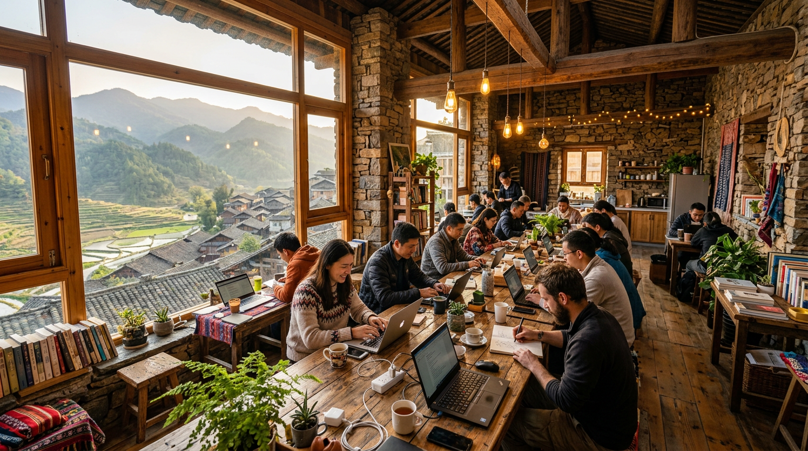

01
不是来听概念，是带着真实问题来拆
周六晚上先把最上头、最崩溃、最想骂人的问题讲出来。先别装懂，先说真话。
如果你想要的不是再多听几个热词，而是把 AI 真正接进自己的工作和生活，这个周末的结构就是为这件事设计的。
周六晚上先把最上头、最崩溃、最想骂人的问题讲出来。先别装懂，先说真话。
白天不是坐着被灌信息流，而是看别人怎么把 AI 跑进业务、内容、流程和团队协作。
到了周日晚，不继续听。围绕共性问题深度答疑和实操拆解，把"知道"推成"能做"。
先把问题讲出来，再把路径看明白，最后把方法真正上手。三段节奏非常明确，不绕弯。
先别讲方法，先把问题摆上来。学 AI、用 AI 过程中最让你上头、最让你崩溃、最让你想骂人的事，都可以先说出来。
白天不是"听课"，是切磋。不是来记几个术语，而是看别人怎么真把 AI 跑进工作、业务和团队。
到了晚上，就不继续听了。打开电脑直接干，围绕共性问题做深度答疑和实操拆解。
不是"未来会怎样"，而是"别人现在怎么干"。上午看槽点找方向，下午进具体场景，晚上直接开干。
先别讲方法，先把问题摆上来。现场围绕"学习 AI 过程中，你碰到最恶心的事是什么？"展开，槽点收上来、归好类，变成第二天真正要拆的手搓池。 这不是抱怨局，槽点背后都是爆点。
非技术团队的AI工具实操经验，六大工具现场演示。
全是拿结果说话的故事，不是来听"未来会怎样"，而是看"别人现在怎么干"。
自由社交时间、资源与需求对接，把问题带到现场找同伴一起拆。
到了晚上就不继续听了，打开电脑直接干。深度实操 + 问题答疑 + 共性问题集中解决。谁带着问题来，谁晚上收获最大。
秦托邦不是标准会议室，也不是只负责工位和床位的地方。它是秦岭脚下栗峪口村里的青年社区，更适合把一场 AI 活动做成真正有人味、有参与感、有后劲的线下体验。
"在当下日渐原子化的社会里，回归人本身，探索一种新型的群居生活方式。"
办公、住宿、厨房、公共活动区和松弛交流空间放在一起，适合把一次活动做成连续体验。
比"讲完即散场"更适合大家坐下来继续聊、继续拆问题、继续把方法手搓出来。
共享办公区、会议空间、住宿房间、共享厨房、洗烘设施、健身区和公共交流区都已齐备。

自驾可达，距京昆高速涝峪收费站约 3.4 公里；从鄠邑站打车约 20 分钟，从西安咸阳国际机场打车约 70 分钟。
电脑、充电器、耳机、常用药和一件保暖外套。山区昼夜温差较大，公共空间插座也建议自己准备得更从容。
活动参与者可享住宿 6 折，床位低至 35 元。现场过夜更适合把周日白天和晚上的衔接跑完整。
4 月 18 日（周六）晚开放麦，4 月 19 日（周日）正式场。地点在秦托邦数字游民社区，陕西省西安市鄠邑区栗峪口村。
如果你想来现场把问题讲出来、把思路看明白、把方法真正上手，这里就是报名和咨询入口。建议直接带电脑到场。
长按扫码报名 / 咨询
了解住宿、路线与到场安排
从吐槽到切磋，从方法到工具，这一场的所有内容都在这里。